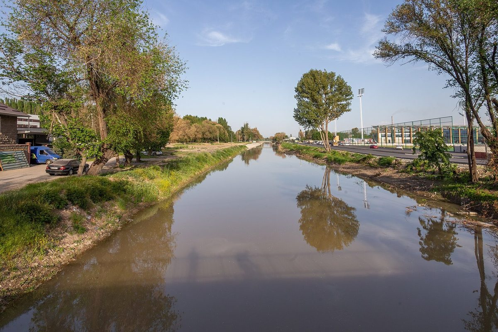

The valleys
Rim villages' water tank was built to 60% of its design, and the 2021 handover papers have not been shown
A TSU survey finds three Fergana-rim villages get tap water 11.4 hours a day. The district will pay to finish the tank, but the donor's closing report is unfinished and nobody has said who accepted the work in 2021.

The Korgoncho Rural Water Supply Scheme was finished in 2021 with a grant from a foreign development partner and co-financing from the Rural Development Fund. Five years later, households in the three villages it serves get tap water for an average of 11.4 hours a day, according to a survey by hydrologists at Talas State University (TSU). The storage tank at the heart of the scheme was built to about 60% of its design volume.
The team, led by Dr Bermet Asylova, questioned about 640 households in Korgoncho, Sopol-Tepa and Kyzyl-Oktyabr, in the Fergana rim farm belt of Lower Naryn District, in October. The scheme was supposed to supply water round the clock. At 11.4 hours a day, the average household is without it for the other 12.6.
IradOne reported the survey on Monday, with the district's pledge to finish the tank. The government's own press release the same day carried the pledge under the headline "Lower Naryn District to Complete Water Storage Tank for Rim Villages in 2027 Budget". Neither said who built the tank short, or who accepted it as finished.
What the papers do not show
The pumps and pipes were completed. The tank is the part that was not. A tank at 60% of its design volume cannot bank water overnight, so the pumps cannot fill it for the evening peak, when most households draw water at once. Dr Asylova's team found the shortage is worst in the evening.
The two documents that would explain how this happened are the donor's closing report and the contractor's handover papers. The closing report is unfinished. The Times has not seen the handover papers and does not know who signed them, or whether the tank's volume was recorded in them. The Times does not suggest that any law has been broken, and it names no one. It sent written questions on Monday to the district administration, to the Rural Development Fund, whose director is Kanybek Zhorobekov, and to the donor's office. The Fund and the donor had not replied by Wednesday evening.
Nor is it clear why the gap lasted five years. A survey by a university team, not an inspection, is the first public measurement the Times can find. Residents had noticed sooner. "We fill buckets at four in the afternoon, because by seven the tap is a whisper," said Dilfuza Yusupova, who lives in Sopol-Tepa.
What they say
The wells behind the scheme are recharged by the Naryn-fed irrigation canals of the farm belt. Dr Asylova said that ties the village taps to the canal rota. "A well is only as full as the canal that feeds it," she said. "When the rota is tight, the water table drops, and when the power to the pumps is cut, the pumps stop, so a small tank gives the village no cushion either way." Residents told the survey team that supply is worst in exactly those weeks.
The head of the Lower Naryn District administration, Alisher Kholmatov, said the district will pay to complete the tank in the 2027 budget. "The tank will be finished from the district's own funds," he said. He did not say what it would cost, or whether the district would seek to recover any of it from the contractor.
The pledge depends on a document few people see. The Ministry of Economy sends the 2027 draft to the Mejlis this month, it passes in December, and only a summary is published. The summary is unlikely to show a line for one village tank.
Why it matters
The Naryn water and power protocol is due for renewal in 2027, and the rota that decides how full the rim's canals run is part of that bargain. A village scheme built on canal-fed wells depends on it. A tank that holds 60% of what was designed leaves the villages with less margin before the talks begin.
The first question is the one the survey cannot answer: which document recorded the tank's size when the scheme was handed over in 2021. The donor can finish its closing report and publish it. The district can publish the handover act and the cost of completion when it publishes the budget. Until then, a pledge to finish the tank says what will be built, and nothing about why it was not built in the first place.
Earlier report: Rim Villages Get Tap Water 11.4 Hours a Day, TSU Survey Finds; District Pledges Tank (IradOne)
The Times keeps its investigations free to read. If they are worth something to you, subscribe to the paper.